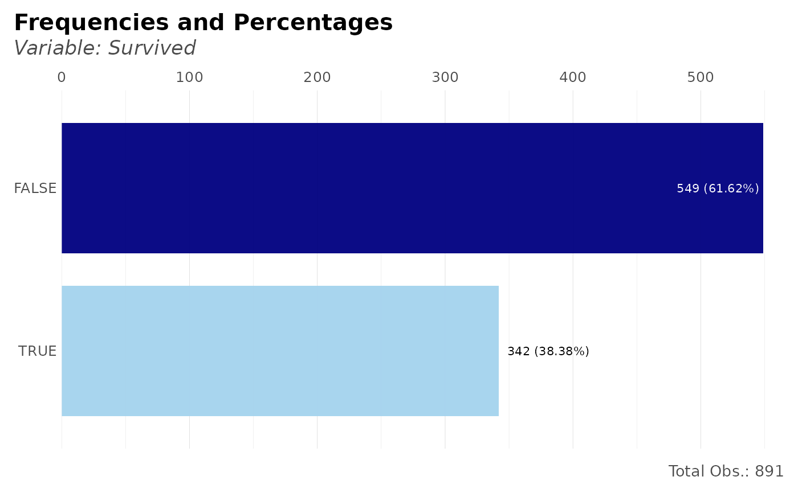
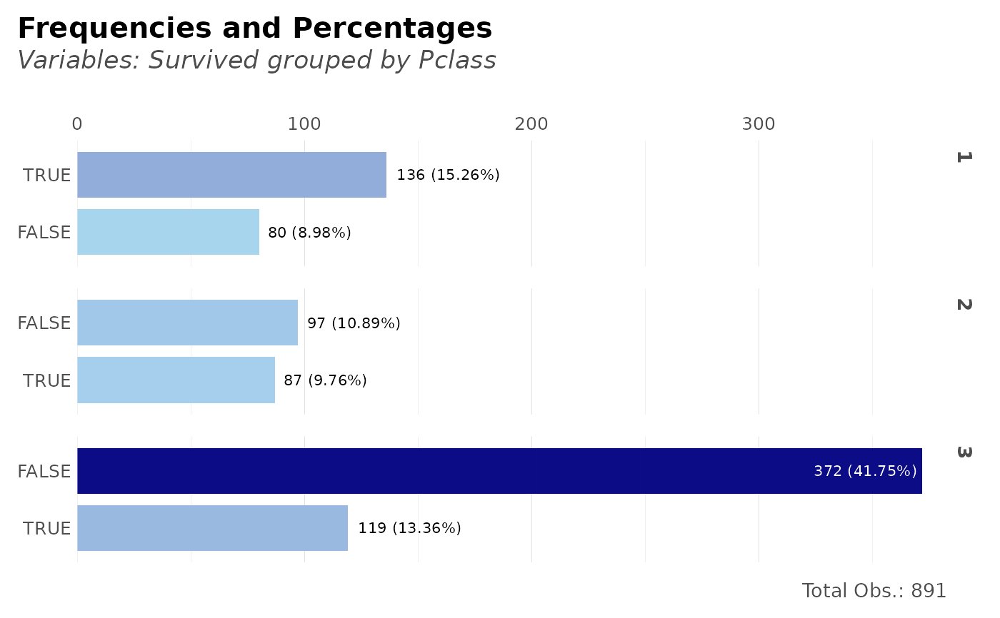
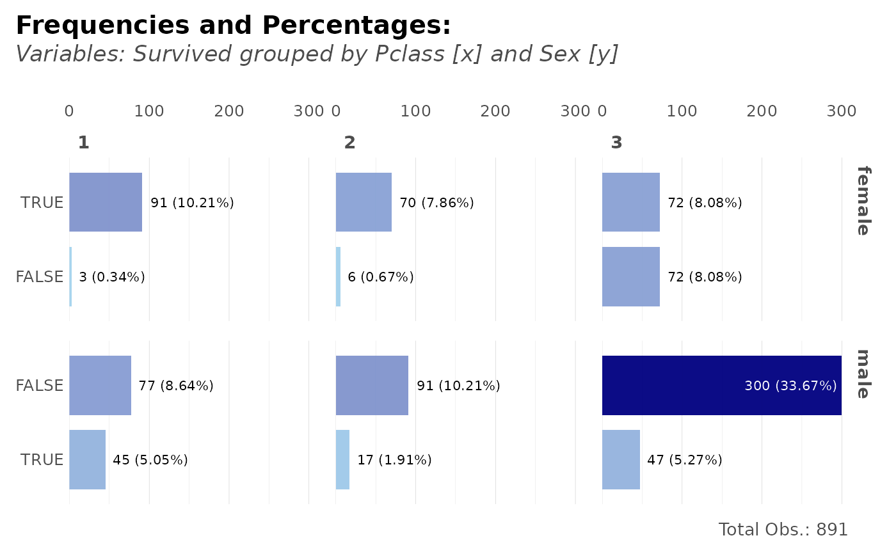
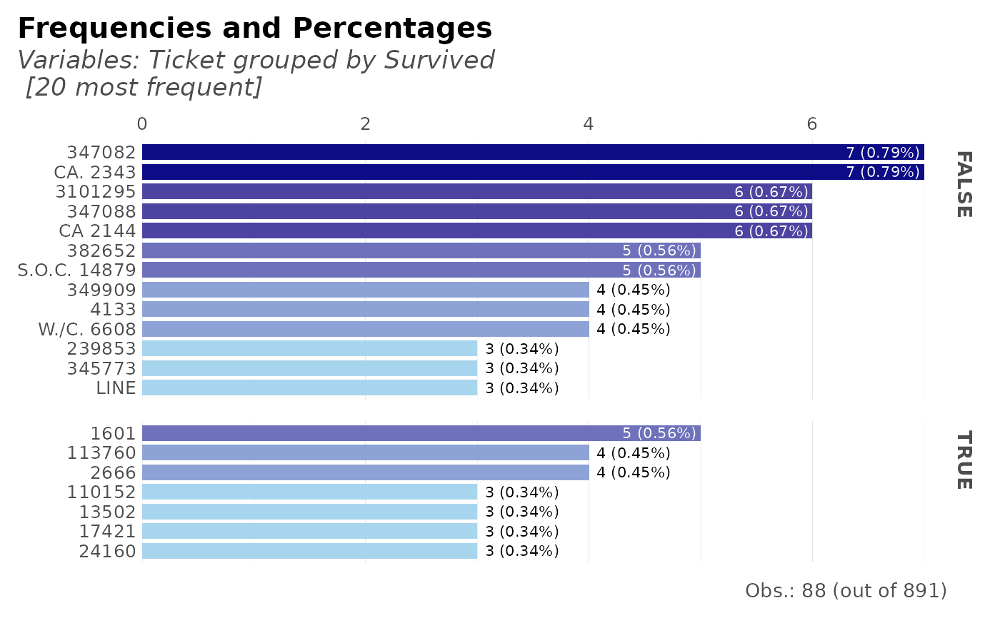

This function lets the user group, count, calculate percentages and cumulatives. It also plots results if needed. Tidyverse friendly.
Usage
freqs(
df,
...,
wt = NULL,
rel = FALSE,
results = TRUE,
variable_name = NA,
plot = FALSE,
rm.na = FALSE,
title = NA,
subtitle = NA,
top = 20,
abc = FALSE,
save = FALSE,
subdir = NA,
quiet = FALSE
)Arguments
- df
Data.frame
- ...
Variables. Variables you wish to process. Order matters. If no variables are passed, the whole data.frame will be considered
- wt
Variable, numeric. Weights.
- rel
Boolean. Relative percentages (or absolute)?
- results
Boolean. Return results in a dataframe?
- variable_name
Character. Overwrite the main variable's name
- plot
Boolean. Do you want to see a plot? Three variables tops.
- rm.na
Boolean. Remove NA values in the plot? (not filtered for numerical output; use na.omit() or filter() if needed)
- title
Character. Overwrite plot's title with.
- subtitle
Character. Overwrite plot's subtitle with.
- top
Integer. Filter and plot the most n frequent for categorical values. Set to NA to return all values
- abc
Boolean. Do you wish to sort by alphabetical order?
- save
Boolean. Save the output plot in our working directory
- subdir
Character. Into which subdirectory do you wish to save the plot to?
- quiet
Boolean. Keep quiet? If not, informative messages will be shown.
See also
Other Frequency:
freqs_df(),
freqs_list(),
freqs_plot()
Other Exploratory:
corr_cross(),
corr_var(),
crosstab(),
df_str(),
distr(),
freqs_df(),
freqs_list(),
freqs_plot(),
lasso_vars(),
missingness(),
plot_cats(),
plot_df(),
plot_nums(),
tree_var()
Other Visualization:
distr(),
freqs_df(),
freqs_list(),
freqs_plot(),
noPlot(),
plot_chord(),
plot_survey(),
plot_timeline(),
tree_var()
Examples
Sys.unsetenv("LARES_FONT") # Temporal
data(dft) # Titanic dataset
# How many survived?
dft %>% freqs(Survived)
#> # A tibble: 2 × 5
#> Survived n p order pcum
#> <lgl> <int> <dbl> <int> <dbl>
#> 1 FALSE 549 61.6 1 61.6
#> 2 TRUE 342 38.4 2 100
# How many survived per Class?
dft %>% freqs(Pclass, Survived, abc = TRUE)
#> # A tibble: 6 × 6
#> Pclass Survived n p order pcum
#> <fct> <lgl> <int> <dbl> <int> <dbl>
#> 1 1 FALSE 80 8.98 1 8.98
#> 2 1 TRUE 136 15.3 2 24.2
#> 3 2 FALSE 97 10.9 3 35.1
#> 4 2 TRUE 87 9.76 4 44.9
#> 5 3 FALSE 372 41.8 5 86.6
#> 6 3 TRUE 119 13.4 6 100
# How many survived per Class with relative percentages?
dft %>% freqs(Pclass, Survived, abc = TRUE, rel = TRUE)
#> # A tibble: 6 × 6
#> # Groups: Pclass [3]
#> Pclass Survived n p order pcum
#> <fct> <lgl> <int> <dbl> <int> <dbl>
#> 1 1 FALSE 80 37.0 1 37.0
#> 2 1 TRUE 136 63.0 2 100
#> 3 2 FALSE 97 52.7 1 52.7
#> 4 2 TRUE 87 47.3 2 100
#> 5 3 FALSE 372 75.8 1 75.8
#> 6 3 TRUE 119 24.2 2 100
# Using a weighted feature
dft %>% freqs(Pclass, Survived, wt = Fare / 100)
#> # A tibble: 6 × 6
#> Pclass Survived n p order pcum
#> <fct> <lgl> <dbl> <dbl> <int> <dbl>
#> 1 1 TRUE 130. 45.3 1 45.3
#> 2 1 FALSE 51.7 18.0 2 63.4
#> 3 3 FALSE 50.9 17.7 3 81.1
#> 4 2 TRUE 19.2 6.69 4 87.8
#> 5 2 FALSE 18.8 6.56 5 94.3
#> 6 3 TRUE 16.3 5.68 6 100
### Let's check the results with plots:
# How many survived and see plot?
dft %>% freqs(Survived, plot = TRUE)

# How many survived per class?
dft %>% freqs(Survived, Pclass, plot = TRUE)
# Per class, how many survived?
dft %>% freqs(Pclass, Survived, plot = TRUE)

# Per sex and class, how many survived?
dft %>% freqs(Sex, Pclass, Survived, plot = TRUE)

# Frequency of tickets + Survived
dft %>% freqs(Survived, Ticket, plot = TRUE)
#> Slicing the top 20 (out of 681) values; use 'top' parameter to overrule.

# Frequency of tickets: top 10 only and order them alphabetically
dft %>% freqs(Ticket, plot = TRUE, top = 10, abc = TRUE)
#> Slicing the top 10 (out of 681) values; use 'top' parameter to overrule.